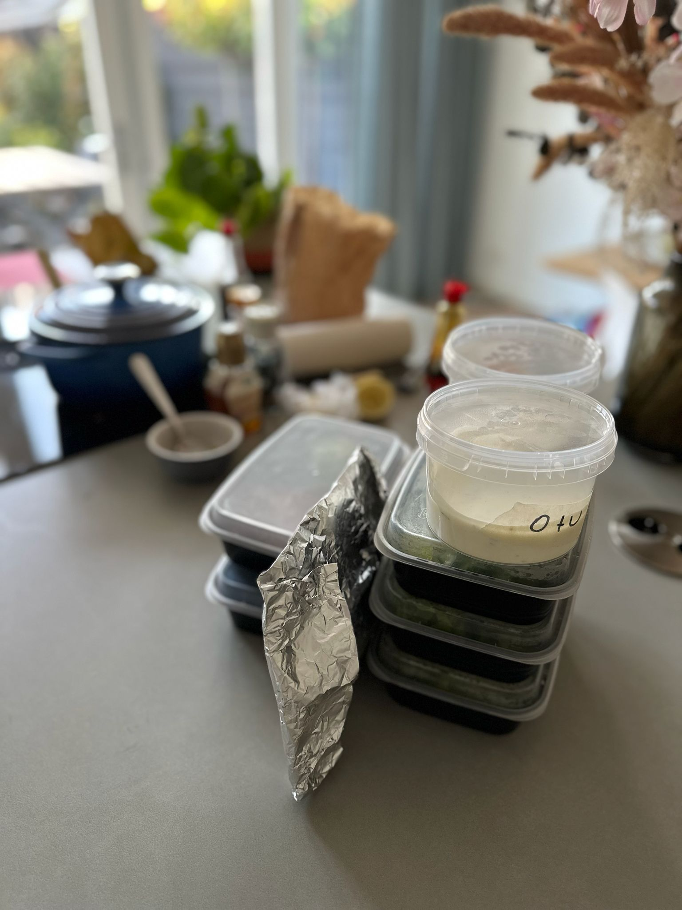
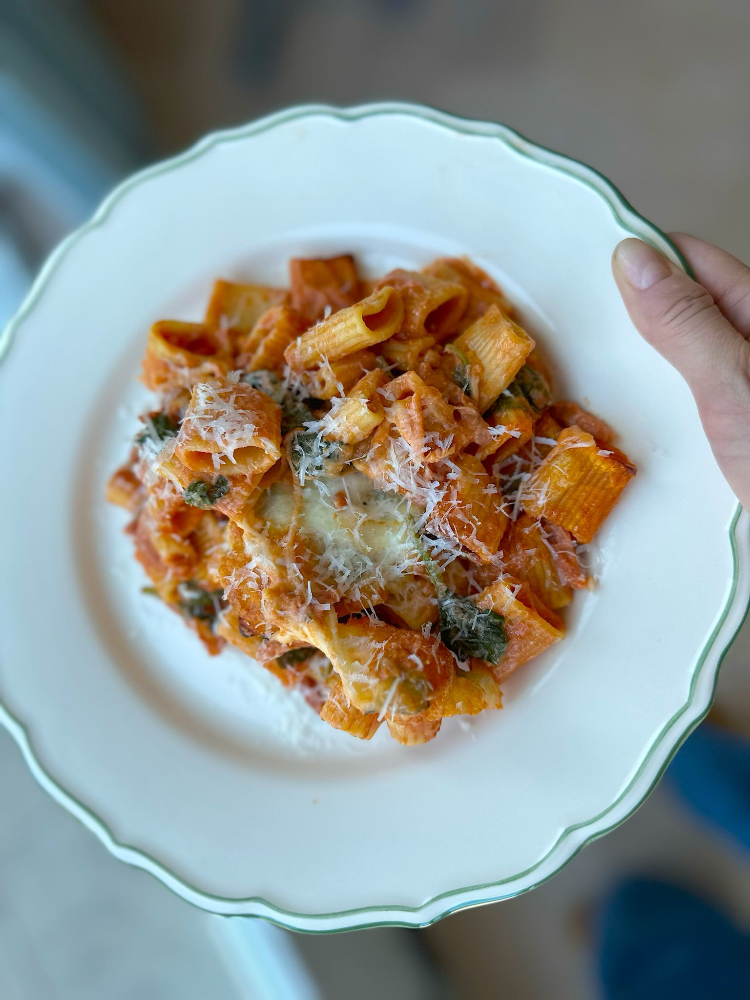
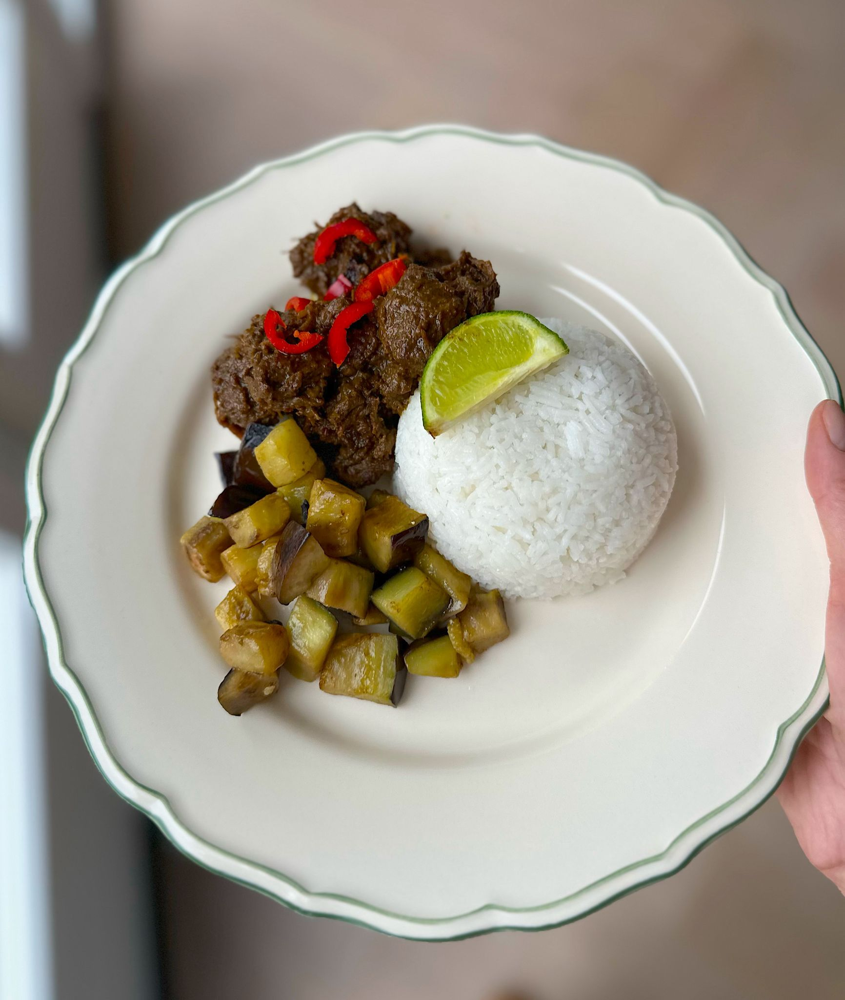
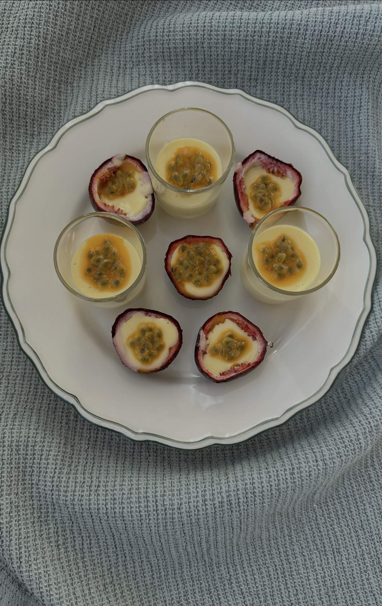
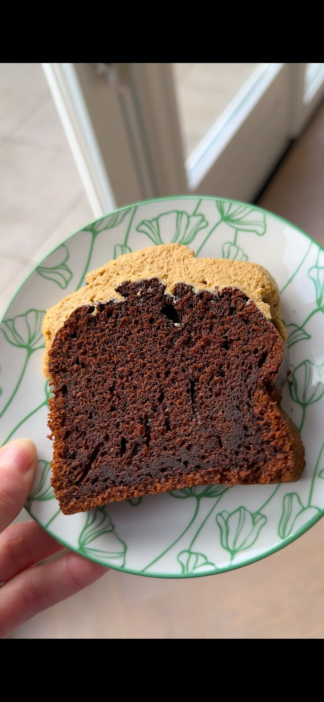
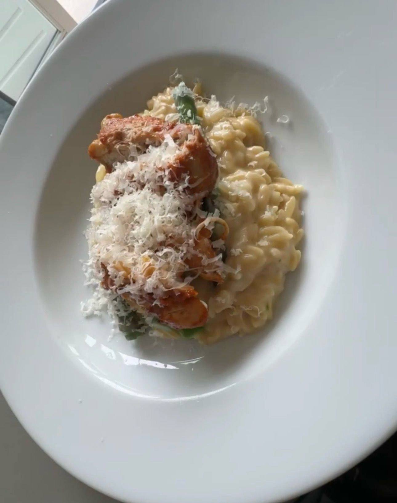
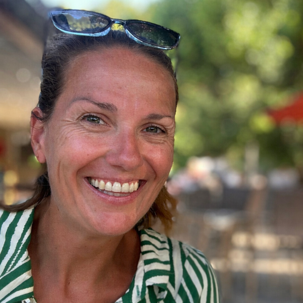
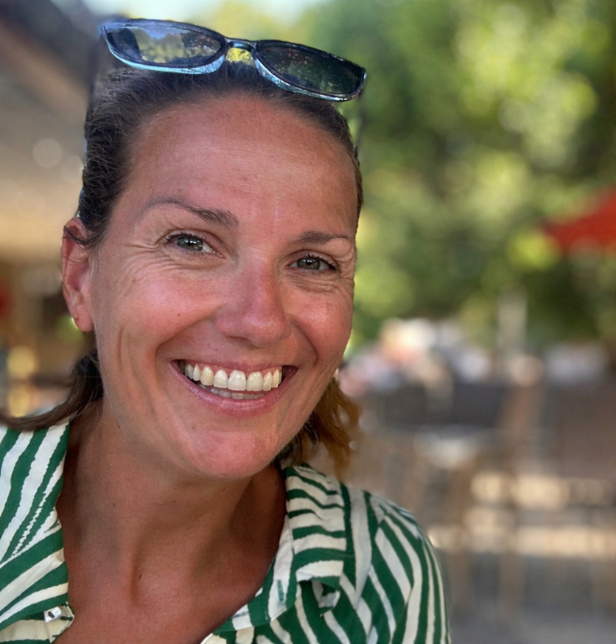

Warm thuis
Verzorgd, huiselijk en klaar om mee aan tafel te nemen.
Preview sfeerimpressie, nog niet live
Wekelijks vers huisgemaakt afhaalmenu
Sfeer aan tafel
Dit is een voorstel om op de homepage een rustige sfeerimpressie toe te voegen. Niet als los fotoalbum, maar als een stijlvolle blik in de keuken, aan tafel en op de borden die jij maakt.
Mijn advies: op de bestaande pagina houden. Dat voelt warmer en persoonlijker dan een apart tabblad.

Verzorgd, huiselijk en klaar om mee aan tafel te nemen.

Gerechten die meteen trek opwekken en gezellig aanvoelen.

Kleurrijke borden met aandacht voor detail en balans.

Ook ruimte voor borrel, dessert en kleine verwenmomenten.

Een huisgemaakte zoete noot maakt het geheel nog warmer en persoonlijker.

Een klassiek bord dat laat zien hoe toegankelijk en verzorgd jouw keuken is.

Even voorstellen
Ik ben Suzanne, maar mijn familie noemt mij San. Koken is voor mij ontspanning, gezelligheid en een manier om anderen blij te maken.

Ik ben Suzanne, maar mijn familie noemt mij San. Oorspronkelijk kom ik uit Amsterdam, maar inmiddels woon ik al jaren met veel plezier in Rosmalen.
Naast mijn werk bij een verzekeringsmaatschappij breng ik graag tijd door met mijn gezin. Ik houd van muziek luisteren, op vakantie gaan en gezellig eten met een goed glas wijn erbij.
Koken is voor mij ontspanning en gezelligheid. Ik vind het heerlijk om mensen om mij heen te zien genieten van mijn eten.